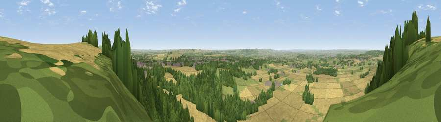

Viewpoint near Devizes
#4942 in England · top 4% of its area beats it · near DevizesThe view, rendered

A 360° render of this exact spot computed from the terrain model, tree cover and land cover — summer colours, afternoon light, calibrated against photographs of famous viewpoints. Real trees, hedges and buildings will differ in detail.
The panorama
Grey silhouette: terrain skyline in each direction (720 bearings, Earth curvature and refraction included). Dashed green: skyline with trees (+15 m) and buildings (+8 m) as obstacles. Blue strip: how far the ground is visible on each bearing.
Where the view opens
Wedge length = distance to the farthest visible ground on that bearing (vegetation-aware). Rings at 10, 25 and 50 km.
What fills the view
51% cropland · 31% woodland · 15% grassland · 2% built-up
Angular shares of the visible panorama (visual magnitude), not map area. Landscape diversity 0.47 (0–1 Shannon).
Key numbers
More beautiful places nearby
The staircase of upgrades: each row has a higher view potential than everything closer. Driving times are estimates from straight-line distance, calibrated against real road routing — check an actual route before setting out.
| Place | Direction | Drive | Score |
|---|---|---|---|
| Viewpoint near Heddington | NNW · 0 km | ~1 min | 72.1 |
| Viewpoint near Heddington | NNW · 1 km | ~3 min | 73.0 |
| King's Play Hill | N · 2 km | ~6 min | 73.9 |
| Morgan's Hill | NE · 4 km | ~9 min | 74.3 |
| Viewpoint near Allington | E · 8 km | ~15 min | 75.6 |
| Martinsell viewpoint | E · 17 km | ~30 min | 77.3 |
| Viewpoint near Nympsfield | NNW · 43 km | ~63 min | 77.5 |
| Viewpoint near Stinchcombe | NW · 43 km | ~63 min | 80.5 |
51.37393, -1.99313 · source: screening · position refined by local search. Computed location — check access rights before visiting.